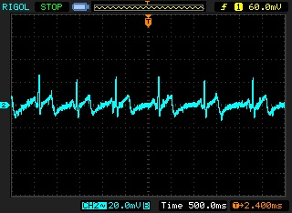

EKG Sensor. The mobile phone as a medical instrument.
We believe that any hospital, village clinic, or doctor can have access to advanced health care instruments like an EKG monitor for little more than the cost of a mobile phone.
Health care facilities in developed countries have access to a large number of medical instruments unavailable to health care professionals in the developing world. One example of such an instrument is the EKG monitor. EKG signals are used to diagnose a wide range of medical conditions but they are often unavailable in all but the most advanced hospitals in developing countries like India, Ghana etc. We aim to design a low-power, low-cost EKG monitor that uses the "HiJack" platform for interfacing between the EKG sensor peripheral and the mobile phone, and the mobile phone for visualizing the ECG waveform.
POTENTIAL IMPACT
This simple, plug-and-play, power+data over the audio interface of the mobile phone to monitor the EKG is just the first step towards a broader personal and participatory sensing applications like blood glucose monitor, blood pressure monitor and body temperature monitor. Such a monitoring device, costing just a few dollars, can enable village clinics throughout the developing world to gain access to modern medical equipment at a fraction of the cost. Mobile devices have the potential to seamlessly blend health care into our daily lives. Evolving mobile health technology will empower individuals to better monitor and manage their own health, encouraging them to live healthier lifestyles and prevent many health problems before they begin. In addition, mobile health can help professional care-givers to better monitor their patients, detect problems earlier, and reduce the need for hospital visits that are expensive and inconvenient to patients.
DESCRIPTION
At the heart of the EKG sensor is a low power CMOS instrumentation amplifier and filtering circuitry to minimize the drawn current and noise effect on the EKG signal. It is a 3 lead monitoring system, where the red and white leads receive signals from patient's wrists, and the black lead is connected to the right leg to reduce the baseline drift. The sensor module is interfaced with the HiJack platform to deliver the resulting EKG trace on the smartphone screen. The entire module is implemented in a square-inch area footprint and consumes only 130 µA (0.35 mW). The following figure shows the EKG signal of an individual on the oscilloscope.

FUTURE DIRECTIONS
Implement a few algorithms on the EKG data collected to predict any heart abnormality like arrhythmia. Integrating the EKG data from the smartphone with a social networking website like Facebook where a person's EKG will complement his virtual persona online. The doctor would just have to log into Facebook and have access to his patient's medical information. He can notice any abnormal activity in real-time and take fast preventive action. Design a dedicated ultra-low power (< 1 µW) EKG sensing chip to perform continuous heart monitoring for enabling battery free EKG measurements powered by energy harvesting.
RELEVANT READINGS
"Micropower Electrocardiogram Amplifier" L. Fay, V. Misra, R. Sarpeshkar, IEEE Transactions on Biomedical Circuits and Systems, Vol. 3, No. 5, pp. 312-320, October, 2009.
"A Portable, Low-Power, Wireless Two-Lead EKG System" Thaddeus Fulford-Jones, Gu-Yeon Wei, Matt Welsh, 26th IEEE EMBS Annual International Conference, September, 2004.
PCBs
 Low power PCB for sensing human body signals like ECG and EKG.
Low power PCB for sensing human body signals like ECG and EKG.
Publications
AudioDAQ: Turning the Mobile Phone’s Ubiquitous Headset Port into a Universal Data Acquisition Interface
Proceedings of the 10th ACM Conference on Embedded Network Sensor Systems (SenSys’12)
Hijacking Power and Bandwidth from the Mobile Phone’s Audio Interface
Proceedings of the First ACM Symposium on Computing for Development (DEV’10)
Demo: Hijacking Power and Bandwidth from the Mobile Phone’s Audio Interface
Proceedings of the 8th ACM Conference on Embedded Networked Sensor Systems (SenSys’10)
People


Grants
NeTS: Medium: Collaborative Research: Experimental Platform for Low-Power Wireless Networking Research
National Science Foundation
CIFellows Project: Grafting Energy-Harvesting Leaves onto the Battery-Powered Sensornet Tree
National Science Foundation/Computing Research Association
CI-ADDO-NEW: MobiLab -- A Global-Scale Live Laboratory to Support Mobile Computing Science
National Science Foundation
CSR: Large: Collaborative Research: Integrating Circuits, Sensing, and Software to Realize the Cubic-mm Computing Class
National Science Foundation